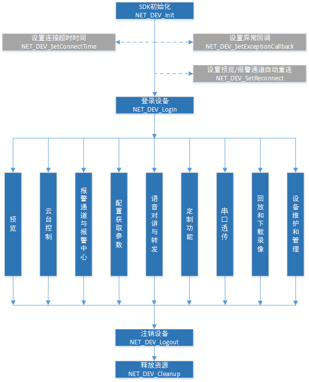

杰迈视讯SDK开发使用手册
SDK接口调用的主要流程

初始化SDK（
NET_DEV_Init
）：初始化SDK环境，预分配内存，启动线程，开启日志功能等。
设置连接超时时间（
NET_DEV_SetConnectTime
）：可选操作，用于设置SDK的网络连接超时时间，用户可以根据自己的需要设置该值。默认为3秒。
设置自动重连（
NET_DEV_SetReconnect
）：可选操作，用于设置是否在网络异常时候自动重新连接设备。
设置接收异常消息的回调函数（
NET_DEV_SetExceptionCallback
）：用户可以在初始化SDK后就设置该回调函数，在应用层对预览、语音、报警等模块异常消息的接收和处理。
用户注册设备（
NET_DEV_Login
）：用户登录到设备上，返回唯一ID作为其他对设备操作的句柄。
预览模块：从设备获取实时流，并可以控制流播放。具体流程详见
实时预览流程
。
云台控制模块：如果设备带有云台，可以对设备云台进行转动、巡航、模式路径等操作。具体流程详见
云台控制模块流程
。
报警通道和报警中心模块：用于接收设备的报警信息。具体流程详见
报警通道和报警中心模块流程
。
配置获取参数模块：获取和配置设备的信息、功能、性能等。具体流程详见
配置获取参数模块流程
。
语音对讲与转发模块：用于语音对讲、监听设备声音、发送音频数据到设备等。具体流程详见
语音对讲与转发模块流程
。
定制功能模块：用于特定行业应用的功能等。具体流程详见
定制功能模块流程
。
串口透传模块：建立一条透明通道，让调用者直接和底层的串口交互数据。用于温湿度、烟感、门禁、车库门等传感器控制。具体流程详见
串口透传模块流程
。
回放和下载录像模块：用于下载录像数据，以及播放录像。只适用于NVR。具体流程详见
回放和下载录像模块流程
。
设备维护和管理模块：用于对设备进行特殊的操作，如重启等。具体流程详见
设备维护和管理模块流程
。
注销用户设备（
NET_DEV_Logout
）：在用户想退出设备时候调用。
清理SDK环境（
NET_DEV_Cleanup
）：清理SDK环境，释放内存，关闭线程等。
注：本手册下文提供的代码都是在VS2008环境下编译的。